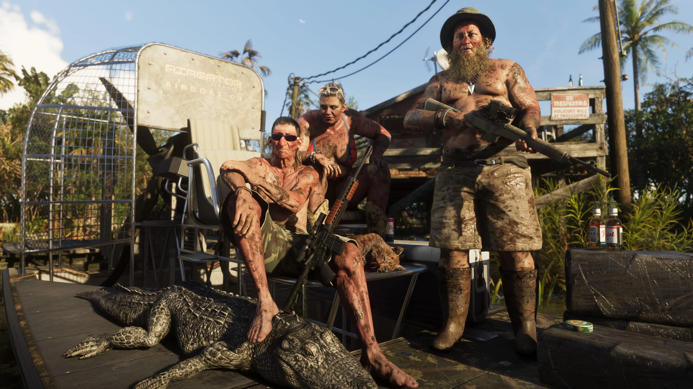
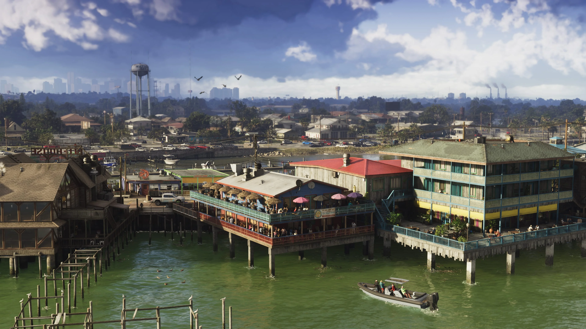
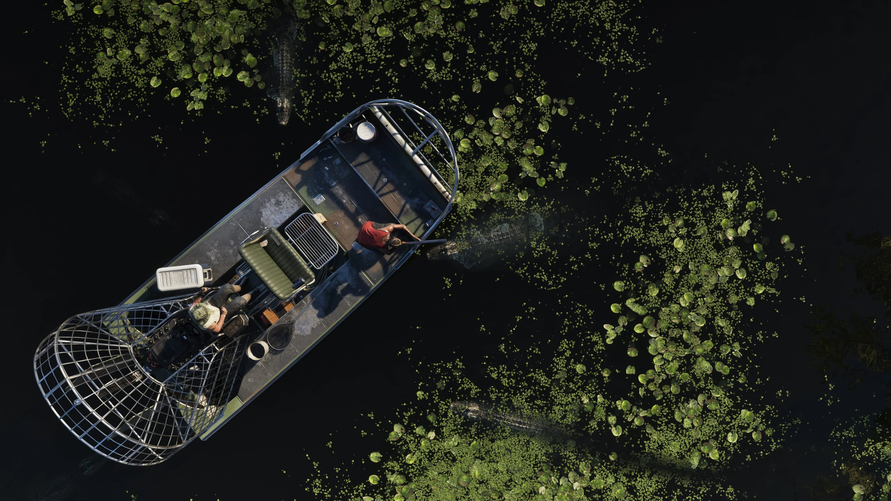
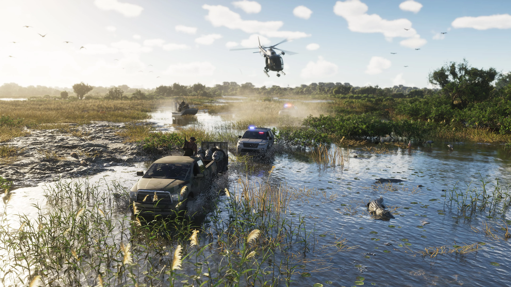
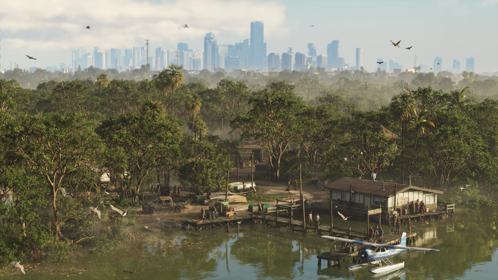

Grassrivers
Grassrivers é a face mais selvagem de Leonida: uma imensa região pantanosa, tomada por água, manguezais e animais que se escondem sob a superfície. Nos materiais oficiais de GTA VI, os jacarés são a atração mais conhecida — mas não necessariamente o maior perigo.

Os wetlands de Leonida
Longe das luzes de Vice City, Grassrivers mostra como o estado de Leonida também será formado por grandes áreas naturais. É um cenário de águas rasas, vegetação densa e caminhos que parecem depender tanto de barcos quanto de estradas.
A Rockstar chama a região de uma extensão primordial e indomável. A frase não entrega missões ou pontos específicos do mapa, mas deixa claro que o ambiente foi pensado para transmitir isolamento, risco e a sensação de que nem tudo pode ser visto da margem.
As imagens oficiais ajudam a completar esse retrato. Elas mostram áreas alagadas, pequenas construções, embarcações e moradores circulando em um ambiente muito diferente das avenidas e praias urbanizadas apresentadas em Vice City.

CONFIRMADO: a Rockstar apresenta Grassrivers como os wetlands de Leonida e menciona diretamente manguezais, jacarés, predadores mais perigosos e descobertas ainda mais estranhas. O estúdio não revelou o que seriam essas ameaças adicionais.

Vida entre água e vegetação
Em Grassrivers, a água não funciona apenas como pano de fundo. Ela molda a paisagem, separa trechos de terra e influencia a forma como pessoas e veículos parecem atravessar a região.
Os screenshots divulgados pela Rockstar mostram embarcações pequenas, construções junto às margens e trechos cercados por vegetação. É uma paisagem habitada, mas sem a densidade urbana encontrada em outros destinos de Leonida.
Essas imagens permitem compreender a identidade visual de Grassrivers, mas ainda não autorizam dar nomes às construções, comunidades ou canais vistos. Até que a Rockstar identifique esses lugares, eles serão tratados apenas como partes da região.
Os jacarés são apenas parte do perigo
Os jacarés são citados diretamente pela Rockstar na apresentação oficial e aparecem no material visual de Grassrivers. A presença deles confirma que a fauna terá um papel importante na identidade dos pântanos de Leonida.
O texto oficial, porém, vai além. A Rockstar afirma que há predadores ainda mais perigosos e descobertas mais estranhas entre os manguezais, sem explicar se está falando de outros animais, de pessoas ou de acontecimentos ligados à região.
É justamente nesse ponto que surgem muitas teorias entre fãs. Nesta página, elas não serão apresentadas como fatos: qualquer identificação dessas ameaças dependerá de confirmação oficial ou de verificação direta quando o jogo estiver disponível.


Uma região dominada pela água
As imagens oficiais sugerem uma região ampla, com longos trechos de água rasa e vegetação baixa. A linha do horizonte aberta reforça uma sensação de escala bem diferente das ruas fechadas da cidade.
Barcos e outras embarcações aparecem como elementos naturais desse cenário. Isso não confirma atividades ou mecânicas específicas, mas mostra que a navegação integra a representação oficial de Grassrivers.
Ainda não existe um mapa oficial detalhado capaz de mostrar os limites de Grassrivers, os nomes de seus canais ou as ligações exatas com outras regiões. Por esse motivo, mapas produzidos por fãs devem ser entendidos como reconstruções, não como documentação definitiva da Rockstar.
O contraste entre natureza e cidade
Grassrivers ajuda a entender a variedade que a Rockstar pretende dar a Leonida. O mesmo estado que abriga a vida noturna de Vice City também reúne manguezais, comunidades isoladas e grandes áreas praticamente dominadas pela natureza.
Em uma das imagens oficiais, o pântano ocupa o primeiro plano enquanto edifícios aparecem no horizonte. A composição cria uma ligação visual entre o ambiente selvagem e a cidade, mas não basta para calcular uma distância real entre os dois.
O que pode ser afirmado com segurança é que esses contrastes fazem parte da apresentação de GTA VI. A posição precisa de Grassrivers dentro do mapa continuará em aberto até a publicação de material oficial mais detalhado.

O que a Rockstar já revelou
As informações abaixo vêm da apresentação oficial de Grassrivers e da biblioteca de mídia de Grand Theft Auto VI.
Pântanos de Leonida
A Rockstar apresenta Grassrivers com o título “Welcome to the Wetlands”, estabelecendo a região como a principal paisagem pantanosa mostrada até agora.
Manguezais e jacarés
Ambos são mencionados diretamente na descrição oficial e também aparecem associados à identidade visual dos materiais da região.
Perigos sem identidade revelada
A Rockstar afirma que existem predadores mais perigosos e descobertas mais estranhas na região, mas não identifica quais são. Qualquer resposta mais específica, por enquanto, seria especulação.
O que os materiais revelam sobre Grassrivers
Sem inventar nomes, missões ou mecânicas, as imagens e a descrição oficial já permitem observar elementos importantes da identidade construída para a região.
Água como caminho
Embarcações e áreas alagadas indicam que a água faz parte da circulação cotidiana da região.
Manguezais
A vegetação mencionada pela Rockstar define um cenário fechado, úmido e difícil de observar por completo.
Jacarés
São os animais mais diretamente associados a Grassrivers nos textos e nas imagens oficiais.
Outros predadores
A Rockstar afirma que há perigos maiores, mas preserva deliberadamente a identidade dessas ameaças.
Presença humana
Construções e moradores mostram que Grassrivers não é apenas uma área natural desabitada.
Natureza e cidade
Edifícios no horizonte aproximam visualmente os pântanos do lado urbano de Leonida.
Horizonte aberto
As paisagens amplas sugerem um espaço muito diferente da verticalidade e da densidade de Vice City.
O que ainda não sabemos
Missões, atividades, limites e nomes internos permanecem sem confirmação oficial.
Imagens de Grassrivers
Screenshots oficiais divulgados pela Rockstar Games para a região.
Grassrivers no mapa de GTA VI
Grassrivers faz parte dos destinos oficialmente apresentados de Leonida, mas a Rockstar ainda não divulgou um mapa completo com a posição e os limites de cada região.
As imagens permitem reconhecer pântanos, cursos d'água e construções, porém não informam os nomes desses pontos nem a distância até Vice City. Por isso, o mapa do GTA6Zoone separa claramente dados oficiais de reconstruções feitas pela comunidade.
Explorar o mapa →O que está confirmado
Grassrivers aparece entre os destinos apresentados diretamente pela Rockstar Games.
A apresentação utiliza o título “Welcome to the Wetlands” e descreve uma extensão primordial.
Os animais são mencionados diretamente e aparecem entre os elementos visuais ligados à região.
A Rockstar cita os manguezais como o lugar onde perigos e descobertas podem estar escondidos.
O texto oficial promete predadores mais perigosos e descobertas estranhas sem identificá-los.
Grassrivers possui screenshots identificados pelo nome da região na biblioteca oficial de GTA VI.
Rockstar Games
Esta página utiliza informações e materiais publicados pela Rockstar Games. Quando um parágrafo interpreta elementos visíveis nos screenshots, ele é apresentado como leitura editorial, não como confirmação de uma missão, atividade ou mecânica de jogo.
Site oficial de Grand Theft Auto VI


TRANSPARÊNCIA EDITORIAL: a Rockstar afirma que existem predadores mais perigosos e descobertas mais estranhas em Grassrivers, mas ainda não revelou exatamente quais são. Também não publicou nomes para os canais, construções ou comunidades vistas nas imagens. O GTA6Zoone não transforma teorias, mapas de fãs ou interpretações visuais em informações oficiais.